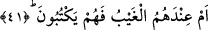

kendinden daha düşük bir hâle koyarsa “Onlardan birine dişi (çocuğu olduğu)
müjdelendiği zaman içi öfkeyle dolarak yüzü kapkara kesilir” (Nahl 16/ 58)
âyetinde de buyrulduğu gibi muhakkak ki kendisi de bu aptalca sözlerin karşılığını
bulmaktan uzak değildir. Âyette gâib sîgalardan muhatab sîgalarına yönelmenin sebebi,
yadırgama ve azarlamayı muhtevî olan, kendinden önceki cümlelerden bağımsız bulunan
“em” edatlı cümlelerin mânâ vurgusunu şiddetlendirmek içindir.
40. Yoksa sen kendilerinden bir ücret istiyorsun da, bu yüzden onlar ağır bir borç
altında eziliyorlar mı?
“Yoksa sen kendilerinden bir ücret istiyorsun da,” Burası gâib sîgasından muhatab
sîgasına yâni müşriklerden yüz çevirip Hz. Peygamber (s.a.)’e dönüşü bildirir. Yâni,
yoksa sen risâlet tebliğine karşı onlardan ücret mi istiyorsun da “bu yüzden onlar ağır
bir borç” yükü, büyük bir borç zimmeti “altında eziliyorlar?”
Mağrem kelimesi borçlanma anlamında mimli bir masdar olup, “iltizâm: yükleme”
kelimesi buna muzaf olarak takdir edilir.
“Mağrem” kelimesi; Keşşaf ’ta kişinin zimmetinde olmayan bir şeyi yüklenmesi;
Fethu’r-Rahman’da “edâsı gereken şey”; Müfredât’da da, insanın malının başkasının
işlediği suçun zararına karşılık verilmesi diye geçmektedir. Böylece “mağrem” ve
“ğarîm” kelimelerinin, hem borç veren ve hem de borçlu anlamında kullanıldığı
anlaşılmaktadır. Yâni onlar, taşıması ağır bir borç yükünü yüklenip de borç yükü altında
mı kalmışlardır? Bu yüzden mi sana tâbi olmazlar. Yâni böyle bir mazeretleri asla kabul
edilecek değildir. Din, dünya ile satın alınamaz.
İlim ve edebi ekmek için satan,
Tefsir âlimi zarar eder.
“Şüphesiz ki ecir ancak Allah’a âiddir” (Yunus 10/72) âyetinde buyrulduğu üzre
mükâfât ancak Allah’tandır. Bunun tahkîkî çeşitli yerlerde geçmiştir.
41. Yoksa gayba âid bilgiler kendi yanlarında da, onlar mı yazıyorlar?
“Yoksa gayb” yâni gayblerin tespit edilmiş olduğu Levh-i Mahfûz “kendilerinin
yanındadır da” orada bulunanları “kendileri mi yazıyorlar?” da bu hususta menfî veya
müsbet olarak konuşabiliyorlar?